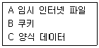
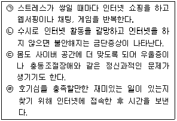
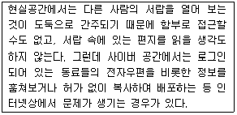

인터넷정보관리사-2급 (2013-09-14 기출문제)
1과목: 인터넷의 이해
1. 플러그인 프로그램에 대한 설명으로 가장 거리가 먼 것은?
- 웹 브라우저의 기능을 확장시켜 준다.
- 프로그램 실행 시 항상 별도의 브라우저 창이 생성된다.
- 누구나 쉽게 다운받아 사용할 수 있다.
- 미디어플레이어, 퀵타임, 아크로뱃리더 등이 있다.
(정답률: 65%)

2. 벡터, 래스터란 용어와 관련 있는 멀티미디어 구성요소는?
- 텍스트
- 이미지
- 동영상
- 사운드
(정답률: 78%)
3. HTML 문서의 <body> 태그 중 배경 이미지를 넣을 때 이용되는 문서 속성 태그는?
- background
- bg
- text
- bgcolor
(정답률: 72%)
4. 그래픽 기반의 HTML 저작도구가 아닌 것은?
- 나모 웹 에디터
- 드림위버
- 프론트페이지
- 울트라에디트
(정답률: 60%)
5. URL 구성요소 중 일반적으로 생략하는 것은?
- 프로토콜
- 호스트명
- 포트번호
- 도메인명
(정답률: 69%)
6. 특정 기관에 등록된 사용자나 호스트에 대한 정보를 검색하는 서버 명령어는?
- nslookup
- ping
- finger
- who
(정답률: 69%)
7. 전용선을 이용한 인터넷 접속 시 필요한 장비와 가장 거리가 먼 것은?
- 라우터
- 랜카드
- OTP
- 게이트웨이
(정답률: 83%)
8. 다음 프로그램들 중 성격이 다른 하나는?
- 일러스트레이터
- 코렐 드로우
- 포토샵
- 골드 웨이브
(정답률: 75%)
9. 문서작성용 프로그램이 아닌 것은?
- 한글 오피스
- 정음 글로벌
- 라이트 웨이브
- MS 워드
(정답률: 87%)
10. 컴퓨터 하드웨어의 구성요소 중 중앙처리장치에 속하는 것은?
- 제어장치
- 입력장치
- 보조기억장치
- 출력장치
(정답률: 82%)
11. 전자문서의 안전성과 신뢰성을 확보하고 이용을 활성화하기 위해 전자서명에 관한 기본적인 사항을 정함으로써 국가사회의 정보화를 촉진하고 국민생활의 편익을 증진하는 것을 목적으로 하는 법은?
- 개인정보보호법
- 저작권법
- 전자문서보호법
- 전자서명법
(정답률: 75%)
12. 저작권법과 관련된 용어와 그 설명으로 틀린 것은?
- 편집저작물 - 편집물로서 그 소재의 선택, 배열 또는 구성에 창작성이 있는 것
- 공동저작물 - 2인 이상이 공동으로 창작한 저작물로서 저작권의 대표자를 정하여 저작권을 행사할 수 없는 것
- 배포 - 저작물 등의 원본 또는 복제물을 공중에게 대가를 받거나 받지 아니하고 양도 또는 대여하는 것
- 개작 - 원프로그램의 일련의 지시, 명령의 전부 또는 상당부분을 이용하여 새로운 프로그램을 창작하는 것
(정답률: 46%)
13. 전자서명생성정보가 가입자에게 유일하게 속한다는 사실 등을 확인하고 이를 증명하는 행위는?
- 인증
- 확인
- 개인정보
- 서명
(정답률: 73%)
14. 저작재산권이 제한되는 경우가 아닌 것은?
- 출판을 위한 복제
- 정치적 연설에 이용
- 공표된 저작물의 인용
- 시험문제로서의 복제
(정답률: 36%)
15. 개인정보 유출방지를 위한 방법으로 틀린 것은?
- 회원가입을 하려는 웹사이트의 회사가 신뢰할 수 있는지 판단한다.
- 개인정보와 관련된 약관을 숙지하고 개인정보관리 책임자가 선임되어 있는지 확인한다.
- 제3자에게 개인정보를 제공하는 것이 필수인지 확인한다.
- 메일을 통해 회원가입을 권유하는 사이트는 피싱사이트일 가능성이 있으므로 회원가입을 삼간다.
(정답률: 55%)
16. 개인정보를 다른 목적으로 이용할 수 없는 경우는?
- 정보주체의 동의가 있거나 정보주체에게 제공하는 경우
- 범죄 수사와 공소의 제기 및 유지에 필요한 경우
- 조약 기타 국제협정의 이행을 위하여 외국정보 또는 국제기구에 제공하는 경우
- 마케팅 활용을 위해 요청하는 임의의 기관에 개인정보를 제공하는 경우
(정답률: 65%)
17. 서비스 품질에 대한 계약이란 용어로 초고속 인터넷 업체들이 고객들의 인터넷 속도를 보장해 주는 것을 무엇이라 하는가?
- SLA
- QoS
- CP
- IDC
(정답률: 40%)
18. 다음 중 인터넷 방송관련 기술과 가장 거리가 먼 것은?
- 디코더
- 스트리밍
- 온 디멘드
- UMS
(정답률: 60%)
19. 클라우드 컴퓨팅 기반 서비스가 아닌 것은?
- 구글 Apps
- 아마존 EC2
- 다음 View
- 페이스북 F8
(정답률: 34%)
20. 클라우드 컴퓨팅에 대한 설명과 가장 거리가 먼 것은?
- 인터넷 상의 서로 다른 위치에 존재하는 각종 컴퓨팅 자원들을 가상화 기술로 통합 한 것이다.
- 사용자가 데이터 저장공간을 필요한 양만큼 언제든지 편리하고 저렴하게 사용할 수 있는 IT 서비스 방식이다.
- 주로 장기간의 사용계약이 많으며 초기 설치비용이 유지비용에 비해 많이 드는 편이다.
- 웹 혹은 프로그램 기반의 통제 인터페이스를 제공한다.
(정답률: 78%)
21. 소셜 미디어 서비스가 아닌 것은?
- 트위터
- me2day
- 페이스북
- N클라우드
(정답률: 80%)
22. 소셜 미디어의 개념으로 옳은 것은?
- 웹 2.0 기술에 기반을 둔 사람과 사람의 관계를 지향하는 서비스를 총칭한다.
- 대량구매의 장점을 실현하기 위하여 복수의 소매업자가 모여서 공동으로 구매하는 것이다.
- 다수의 사람들이 서로 협력하여 얻게 된 지적 능력의 결과로 만들어진 집단적 능력이다.
- 지방자치단체나 정부공공기관이 보유한 정보를 국민 누구나 손쉽게 활용할 수 있도록 오픈한 미디어 서비스이다.
(정답률: 66%)
23. 소셜 미디어의 특징이 아닌 것은?
- 게시글의 전파 속도가 매우 빠르다.
- 기관의 대표성을 지닌 공지성격의 정보도 전파 가능하다.
- 사진이나 동영상은 업로드가 불가하다.
- 개인의 사생활이 노출될 수 있는 위험이 존재한다.
(정답률: 86%)
24. 연결형 프로토콜로서 전송된 데이터 패킷이 제대로 전달되는지 여부를 확인하는 역할을 하는 것은?
- TCP
- PPP
- UDP
- SLIP
(정답률: 52%)
25. 다음 OSI 7계층 중 해당되는 계층이 다른 프로토콜은?
- IP
- FTP
- POP
- HTTP
(정답률: 61%)
26. OSI 7계층 모델에서 상호 대응하는 응용프로그램간 연결의 개시, 관리, 종결을 담당하는 계층은?
- 전송계층
- 세션계층
- 표현계층
- 응용계층
(정답률: 58%)
27. 컴퓨터 사이에 정보를 주고 받기 위하여 정한 통신규약을 뜻하는 용어는?
- 프로토콜
- 정보보안
- 흐름제어
- 연결제어
(정답률: 84%)
28. 인터넷 상에서 숫자로 구성된 IP주소를 문자인 도메인 주소로 상호변환 해주는 서비스는?
- Router
- ISP
- Gateway
- DNS
(정답률: 83%)
29. 도메인 네임의 선정원칙으로 틀린 것은?
- 영어나 숫자로 시작한다.
- 최대 63자까지 가능하다.
- 언더바 (_) 기호를 사용할 수 있다.
- 대소문자의 구별이 없다.
(정답률: 57%)
30. IPv6의 유형 중 단일 인터페이스로서 해당 주소로 보내진 패킷이 그 주소에 해당하는 인터페이스로 전달되는 1:1 통신을 의미하는 것은?
- 애니캐스트
- 단일캐스트
- 유니캐스트
- 멀티캐스트
(정답률: 48%)
31. IP주소가 192.168.12.23 이라면 네트워크 주소는?
- 192
- 192.168
- 192.168.12
- 192.168.12.23
(정답률: 52%)
32. 다음 중 국가 5대 전산망이 아닌 것은?
- 공안전산망
- 금융전산망
- 학술전산망
- 의료보건전산망
(정답률: 75%)
33. 인터넷에 대한 설명으로 틀린 것은?
- WWW는 World Wise Web의 약어이다.
- 클라이언트-서버 구조로 이루어진 분산 하이퍼텍스트 시스템이다.
- 전 세계의 컴퓨터들을 하나로 연결한다는 의미의 인터네트워크라는 용어에서 시작 되었다.
- 인터넷 표준 프로토콜은 TCP/IP이다.
(정답률: 53%)
2과목: 인터넷 자원 탐색
34. 전화번호부의 표지에서 유래되었으며 인터넷이 활성화되면서 웹상에 정리해 놓은 업종별 상호명부를 무엇이라 하는가?
- 화이트 페이지
- 옐로우 페이지
- 서치 폰
- 후이즈
(정답률: 84%)
35. 검색방법 중 공백을 포함한 2개 이상의 단어를 순서대로 연속해서 찾고자 할 때 하나의 문자열로 검색하는 방법은?
- 구문 검색
- 만능문자
- 논리곱
- 인접연산자
(정답률: 65%)
36. 정보검색 관련 용어에 대한 설명으로 옳지 않은 것은?
- 리키즈 : 누락 또는 누출을 의미하며 검색 결과에서 빠진 누락된 정보
- 개비지 : 잘못된 연산자 사용으로 인해 불필요하게 검색된 쓸모없는 정보
- 시소러스 : 키워드로 사용된 경우에 무시해 버리는 단어나 문자열
- 공식 사이트 : 정보기관이나 지방자치단체 등에서 제공하는 홈페이지
(정답률: 61%)
37. 정보검색에 대한 설명으로 옳지 않은 것은?
- 대량의 정보 중에서 필요한 정보를 신속, 정확하게 찾아내는 것이다.
- 알권리 차원에서 개인의 사생활정보도 제공되어야 한다.
- 정보검색을 잘하기 위해서 기본 원칙을 지키는 것이 바람직하다.
- 뉴스, 날씨, 공개 소프트웨어, 클립아트 등의 검색 및 자료 다운로드가 가능하다.
(정답률: 87%)
38. 정보검색에서 시소러스에 대한 설명으로 옳은 것은?
- 검색결과에서 검색되었어야 함에도 불구하고 부적절한 키워드 선정이나 연산자의 잘못된 사용으로 검색 결과에서 빠져버린 누락된 정보
- 검색결과에서 불필요하게 검색된 쓸모없는 정보
- 검색엔진이 데이터베이스를 구축할 때 색인에서 제외해 버리는 단어
- 키워드로 사용되는 단어의 유의어/동의어/반의어 등을 계층적인 관계와 종속적인 관계로 나타내주는 용어 사전
(정답률: 62%)
39. 누락 또는 누출을 의미하는 정보검색 관련 용어는?
- 리키즈
- 개비지
- 불용어
- 시소러스
(정답률: 75%)
40. 검색어 [볶음]을 전방절단 검색을 이용하여 검색했을 때 나타나는 결과가 아닌 것은?
- 멸치볶음
- 제육볶음
- 볶음우동
- 가지볶음
(정답률: 79%)
41. 정보검색 방법으로 적합하지 않은 것은?
- 검색엔진에서 지원하는 연산자의 종류와 연산기호를 정확하게 파악한다.
- 주제별 또는 단어별 검색엔진들의 특징을 적절히 활용한다.
- 리키즈를 최소화할 수 있도록 검색한다.
- 개비지를 많이 발생하도록 검색한다.
(정답률: 89%)
42. 트위터에서 고급검색을 위한 기능의 설명으로 옳지 않은 것은?
- 단어들 – 다음 단어 모두 포함, 다음 문구 그대로 포함 등을 연산자에 입력
- 사용자 – 다음 계정들이 작성, 다음 계정들에게 보냄, 다음 계정들을 멘션
- 장소 – 다음 지역 주변
- 기타 – 키워드, 디렉토리
(정답률: 60%)
43. 국외의 검색엔진이 아닌 것은?
- Lycos
- Yahoo
- Naver
(정답률: 78%)
44. 국내 검색엔진 Daum은 현재 서비스가 종료된 사이트의 웹 메일 서비스를 제공한다. 다음 중 해당 되는 사이트는?
- paran
- lycos
- empas
- netsgo
(정답률: 54%)
45. 다음 중 Naver에서 제공하고 있는 서비스는?
- 미즈넷
- 키즈짱
- 아고라
- me2day
(정답률: 69%)
46. 다음 중 Daum에서 제공하고 있는 서비스는?
- 해피빈
- 한게임
- 마이피플
- N드라이브
(정답률: 73%)
47. 검색방식과 검색엔진이 바르게 연결되지 않은 것은?
- 주제별 검색엔진 – 디렉토리 검색엔진
- 단어별 검색엔진 – 키워드 검색엔진
- 메타 검색엔진 – 지능형 검색엔진
- 하이브리드형 검색엔진 – 인덱스 검색엔진
(정답률: 69%)
48. 인터넷 검색의 검색 옵션에 대한 설명으로 옳은 것은?
- 구문 검색 : 와일드 카드 문자를 키워드로 입력한 단어에 붙여서 사용하는 검색
- 절단 검색 : 2개이상의 연속된 문자열을 구문 또는 어구로 하여 검색
- 자연어 검색 : 불완전한 질문 형식이나 대화 등 일상생활에서 사용하는 검색
- 결과내 재검색 : 초기 검색어를 배제하고 정보를 검색
(정답률: 59%)
49. 검색결과의 평가 척도로 적합하지 않은 것은?
- 메뉴얼 인덱스
- 키워드
- 요약
- 위치/빈도
(정답률: 48%)
50. 검색엔진에 의해 검색된 결과의 제공 방식이 아닌 것은?
- 디렉토리
- 카테고리
- 사이트
- 게시판
(정답률: 57%)
51. 검색엔진의 로봇에 대한 설명으로 옳지 않은 것은?
- 메일링 리스트의 URL을 감시한다.
- 유즈넷에 포스팅되는 기사를 방문한다.
- 서버 리스트, 새로운 사이트, 인기/유명 사이트를 주기적으로 방문한다.
- 로봇의 접근을 배제하는 방법은 없다.
(정답률: 69%)
52. 인터넷 상에 있는 웹사이트나 뉴스그룹을 주기적으로 돌아다니며 자동으로 수집한 자료들을 자체적으로 정리하여 웹 서버에 데이터베이스를 구축하게 하는 프로그램을 무엇이라 하는가?
- 로봇
- 색인기
- 유즈넷
- 메일링 리스트
(정답률: 66%)
53. 하이브리드 검색엔진에 대한 설명으로 옳은 것은?
- 키워드 검색엔진 또는 로봇 검색엔진이다.
- 지능형 검색엔진 또는 멀티스레드 검색 엔진이다.
- 주제별 디렉토리 서비스와 키워드 검색 서비스를 동시에 제공한다.
- 자체 데이터베이스 없이 한번의 키워드 입력으로 여러 개의 검색엔진을 동시에 검색한다.
(정답률: 61%)
54. 인터넷 한글 키워드 시스템 기능에 대한 설명으로 옳지 않은 것은?
- 주소 표시줄에 찾고자 하는 사이트 이름을 입력한다.
- 한글 키워드 시스템에서 입력된 키워드가 DNS에 등록된 경우 자동 연결한다.
- 웹 브라우저의 URL 입력창에서 한글 키워드가 DNS에 등록되지 않으면 검색엔진 구글로 검색결과를 화면에 보여준다.
- 인터넷 한글 키워드 시스템 기능은 인터넷 익스플로러 5.0 이상에서 사용 가능하다.
(정답률: 38%)
55. 검색엔진을 구축하여 서비스를 제공하기 위한 3대 구성요소가 아닌 것은?
- 로봇
- 검색엔진 소프트웨어
- 색인기
- 검색엔진 하드웨어
(정답률: 72%)
56. 다음 보기 중 익스플로러 7.0에서 도구 메뉴의 “검색 기록 삭제”를 선택하여 삭제할 수 있는 항목에 해당되는 것끼리 바르게 짝지어진 것은?

- BC
- AB
- AC
- ABC
(정답률: 51%)
57. 인터넷 익스플로러 7.0의 보기 메뉴에서 도구 모음에 속하지 않는 것은?
- 메뉴 모음
- 명령 모음
- 상태 표시줄
- 페이지 설정
(정답률: 46%)
58. 인터넷 익스플로러 7.0에서 검색 기록 삭제를 위한 단축키로 바르게 짝지어 진 것은?
- Ctrl + Del
- Shift + Del
- Alt + Del
- Ctrl + Shift + Del
(정답률: 62%)
59. 인터넷 익스플로러 7.0에서 시스템에 설치된 브라우저 추가 기능을 사용하거나 사용하지 않도록 관리하는 인터넷 옵션의 탭은?
- 일반
- 보안
- 프로그램
- 고급
(정답률: 32%)
60. 인터넷 익스플로러 7.0의 인터넷 옵션의 하위 메뉴 중 인터넷 콘텐츠를 제한할 수 있는 기능을 가진 탭은?
- 고급
- 보안
- 연결
- 내용
(정답률: 45%)
61. 인터넷 익스플로러 7.0에서 웹사이트를 제한하는 기능을 가진 인터넷 옵션 탭은?
- 인코딩
- 보안
- 개인정보
- 추적방지
(정답률: 68%)
62. 인터넷 익스플로러 7.0에서 도구 메뉴에 해당 되는 것은?
- 페이지 설정
- 인터넷 옵션
- 인코딩
- 스타일
(정답률: 57%)
63. 웹 브라우저 크롬에 대한 설명으로 적합한 것은?
- PDF 뷰어가 내장되어 매우 편리하다.
- 노르웨이에서 개발하였고, 유료 소프트웨어로 용량이 작다.
- JAVA 애플릿을 지원하기 위해 개발 되었다.
- 유닉스 VMS 운영체제 사용자를 위한 브라우저이다.
(정답률: 48%)
64. 다음 중 구글에서 개발한 웹 브라우저로 옳은 것은?
- 크롬
- 핫자바
- 익스플로러
- 사파리
(정답률: 77%)
65. 윈도우 기반의 웹 브라우저로 NCSA에서 최초로 개발한 그래픽용 웹 브라우저는?
- 첼로
- 모자익
- 링스
- 오페라
(정답률: 64%)
66. 웹 브라우저의 종류 중 캔사스 대학의 Lou Montulli가 유닉스VMS 운영체제 사용자들을 위해 개발한 텍스트 기반의 브라우저는?
- 아라크네
- 모자익
- 링스
- 삼바
(정답률: 59%)
3과목: 인터넷 윤리
67. 한국정보문화진흥원이 제시한 ‘청소년용 인터넷 중독 자가진단 프로그램의 7가지 기준’ 영역에 해당하지 않는 것은?
- 복종
- 내성
- 일탈행동
- 금단
(정답률: 60%)
68. 인터넷 중독의 대처 방안으로 가장 적절하지 않은 것은?
- 자신의 의지로 벗어나기 어려우면 가족에게 도움을 요청하는 것도 하나의 방안이다.
- 자아실현을 할 수 있는 재미있는 일을 찾는 노력을 해서 존중감을 가질 수 있는 일을 한다.
- 실제 주변 동료와의 대화보다는 게임친구와 실시간 대화를 통해 문제를 해결한다.
- 컴퓨터를 하기 전에 사이버 공간에서 보낼 시간에 대한 로드맵을 작성한다.
(정답률: 70%)
69. 사이버 관계 자체에 빠져 현실 세계를 부정하고 외면하며 인터넷을 통한 대화에만 심취하여 대인관계 장애나 학교나 회사에서 부적응 등의 부정적인 모습을 보이게 되는 것은?
- 게임중독
- 검색중독
- 음란물중독
- 채팅중독
(정답률: 78%)
70. 인터넷 중독의 단계를 바르게 제시한 것은?

- (ㄱ), (ㄴ), (ㄷ), (ㄹ)
- (ㄴ), (ㄷ), (ㄱ), (ㄹ)
- (ㄷ), (ㄱ), (ㄴ), (ㄹ)
- (ㄹ), (ㄱ), (ㄴ), (ㄷ)
(정답률: 69%)
71. 인터넷 중독에 대한 설명과 거리가 먼 것은?
- 특정 행동에 지나친 집착을 해서 벗어나지 못하는 행위중독의 유형 중 하나이다.
- 인터넷 중독의 원인 중의 하나는 지배받고자 하는 욕구와 관련된다.
- 인터넷 중독은 개인만의 문제가 아닌 가족의 문제이다.
- 나이, 학력, 외모 등 현실적 조건들을 드러 내지 않고 변신할 수 있음이 인터넷 중독의 큰 요인이 되고 있다.
(정답률: 60%)
72. 인터넷 중독은 온라인 상태에서 보내는 시간이 지나쳐 심각한 사회적, 정신적, 육체적, 금전적 지장을 받고 있는 상태를 말한다. 다음 중 인터넷 중독과 가장 거리가 먼 용어는?
- 사이버 중독
- 웨버홀리즘
- 인터넷 증후군
- 어플루엔자
(정답률: 56%)
73. 다음 중 개인정보에 대한 설명으로 가장 적절하지 않은 것은?
- 살아있는 개인에 관한 정보를 말한다.
- 이메일 주소만으로는 특정 개인을 알아볼 수 없으므로 개인정보에 속하지 않는다.
- 법률에서 말하는 개인정보는 개인의 신원을 파악할 수 있는 정보를 뜻한다.
- 개인을 식별할 수 있는 생리적 정보에는 성별, 신장, 체중, 혈액형, 지문, 건강상태 등이 포함된다.
(정답률: 65%)
74. 인터넷 사기에 대한 설명과 가장 거리가 먼 것은?
- 피해의 범위와 대상이 한정되어 있지 않다.
- 전자상거래에서 현금결제보다는 쿠폰이나 복권을 이용하는 것이 사기를 피하는 방법이다.
- 게임 머니나 게임 아이템이 사기 거래에 이용되기도 한다.
- 온라인 게임 거래 중개 사이트에서 타인 명의로 거래를 하는 사기도 있다.
(정답률: 79%)
75. 다음의 사이버 일반 범죄들에 대한 설명 중에서 가장 적절하지 않은 것은?
- 사이버 모욕이란 인터넷 상에서 욕설을 비롯해서 상대방으로부터 언어폭력을 당하는 경우를 말한다.
- 사이버 명예훼손은 비방성 내용을 사이버 공간에 게시할 때 성립하는데 사이버 명예 훼손죄가 형법상 일반 명예훼손죄보다 가중 처벌 되고 있다.
- 사이버 성폭력은 정보통신망을 통하여 상대방이 원하지 않는 접속을 지속적으로 시도하거나 욕설, 협박 내용을 담고 있는 메일 송신 행위를 지속하는 것을 말한다.
- 사이버 음란행위는 음란물을 사이버 공간에서 게시하거나 유포하는 행위를 말한다.
(정답률: 63%)
76. 인터넷 상에서의 게시판 예절과 가장 거리가 먼 것은?
- 게시판의 글은 부사, 형용사 같은 꾸미는 말을 가급적 많이 써서 상세하게 표현한다.
- 클릭 수에 연연하기 보다는 알맞은 제목을 사용하는데 중점을 둔다.
- 편리함 보다는 맞춤법에 맞도록 글쓰기의 기본을 지킨다.
- 흥미를 끄는 내용이라 하더라도 근거 없는 내용은 올리지 않는다.
(정답률: 66%)
77. 경찰청에서는 사이버 범죄를 크게 사이버 테러형 범죄와 일반 사이버 범죄로 구분하고 있다. 다음 중 사이버 테러형 범죄와 가장 거리가 먼 것은?
- 디도스 공격
- 전자상거래 사기
- 폭탄메일
- 바이러스 유포
(정답률: 65%)
78. 버지니아 셰어 교수는 ‘네티켓의 핵심원칙’을 제시하였다. 그가 제시한 핵심원칙 중 다음의 설명과 가장 가까운 것은?

- 사람임을 기억하라
- 사이버 공간의 어디에 있는지를 알고 행동하라
- 다른 사람의 사생활을 존중하라
- 내가 가진 권력을 남용하지 말라
(정답률: 76%)
79. 예절이란 사회생활을 하는 사람들이 함께 살아 갈 수 있도록 행동과 마음으로 나타내는 규범 이며, 인터넷 상에서는 네티켓이라고도 한다. 네티켓에 대한 설명과 가장 거리가 먼 것은?
- 네트워크(Network)와 에티켓(Etiquette)이 더해진 말이다.
- 사이버 공간에서 적용되는 강제적인 규범이다.
- 스스로를 더 자유롭게 하기 위한 자기규제이다.
- 지키지 않았을 때 네티즌(누리꾼)들의 비난의 대상이 될 수 있다.
(정답률: 60%)
80. 가장 최근에 형성된 응용윤리 분야 중 하나가 인터넷윤리이다. 다음 중 인터넷윤리에 대한 설명과 가장 거리가 먼 것은?
- 사이버 공간에서 ‘어떻게 행동해야 하는가’에 대한 윤리학적 답을 추구하는 윤리학의 한 분과이다.
- 사이버 공간은 사회적 공간이기 때문에 공존하기 위해서는 인터넷 윤리가 요구된다.
- 사이버 공간에서는 대면관계가 없기 때문에 인간성, 관계성, 사회성, 도덕성, 규칙성 같은 윤리적 쟁점을 인식할 필요가 없다.
- 전자기술의 발달을 기반으로 자판이나 마우스로 작동되는 조작에 의존하지만 윤리적 판단이 우선적으로 요구된다.
(정답률: 62%)